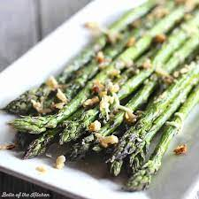

Roasted Asparagus with parmesan

This roasted asparagus
with Parmesan makes a
perfect companion for
all sorts of entrees,
from fish to steak
(and everything in between). If you're in need of a little delicious inspiration
Ingredients
- Olive oil
- Asparugus
- Parmesan
- Sea Salt
- Garlic Powder
- Arrange in a single layer in a casserole dish
- Spray with Olive oil
- Evenly sprinkle the Asparagus with parmesan, salt, and garlic powder
- Roast in pre-heated oven until thickest part of stem is easily pierced with a fork